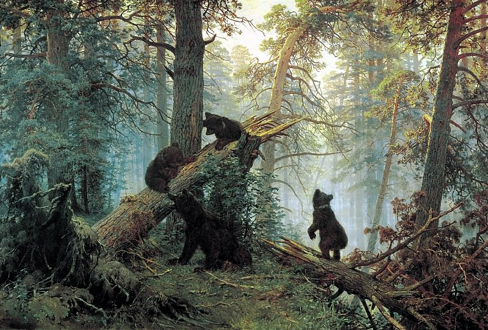

Утро в сосновом лесу - Иван Шишкин, Константин Савицкий
Описание картины "Утро в сосновом лесу - Иван Шишкин":
Утро в сосновом лесу - одно из ярких произведений кисти И. Шишкина. Шедевр пропитан восхищением природы растительного и животного мира. На картине все смотрится очень гармонично. Зеленые, голубые и ярко-желтые тона создают эффект едва проснувшейся от сна природы. На заднем плане можно увидеть яркие золотистые оттенки – это намек на пробивающиеся лучи солнца. Они придают картине торжественную атмосферу. По земле еще клубится туман, изображенный довольно реалистично, и, если сосредоточиться на этой детали шедевра, то можно прочувствовать утреннюю прохладу. Картина "Утро в сосновом лесу" - очень яркая и настолько реалистичная, что кажется, будто бы это не шедевр кисти, а снимок лесного пейзажа. Каждая деталь картины изображена профессионально, с любовью и трепетом. На переднем плане мы видим поваленную с корнем сосну, на которую взбираются медведи. Они резвятся, вызывая положительные эмоции. Для них утро нового дня является настоящим праздником. Медвежата так добры и безобидны, словно приручены. Кажется, что они не способны на жестокость и совсем не хищны, несмотря на свою животную природу. Главный акцент картины – это сочетание солнечного света на заднем плане и медведей на дереве на переднем. Если визуально провести линию через эти объекты, то мы увидим, что они изображены художником наиболее ярко и насыщенно. Все остальное является просто легкими дополняющими зарисовками.
Больше информации о картине...